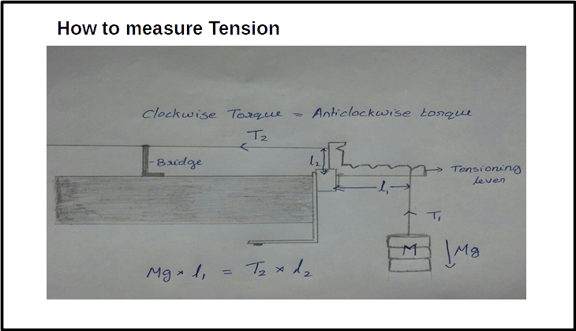

Two physical quantities need to be measured in this experiment – mass and length.
Make the following table –
Table II : The details of the physical quantities to be measured.
| S. No |
Physical quantity |
Independent /Dependent |
Measured with |
Measuring instrument’s |
| Minimum |
Maximum |
Least count |
| 1 |
Length |
dependent |
Meter scale |
|
|
|
| 2 |
Mass |
independent |
Weighting machine |
|
|
|
| 3 |
Mass of the string |
independent |
|
|
|
-
Resonance modes: (Method I)
- Set the Sonometer parallel to table edge.
- Measure the total length, and mass of the string. These values are used for the
calculation of mass/length of the string.(provided on the apparatus)
- Insert two bridges under the string about 60 cm apart. Also place a small piece of paper
on the string.
- Hang a mass of 1 kg from the tensioning lever (third position is preferred). Adjust the
string adjustment knob so that the tensioning lever is horizontal.
- Take a tuning fork of the highest frequency from the box.
- Hit it on the rubber hammer and place it on the sonometer. Observe if the rider falls
off. If the rider does not fall off, change the position of one of the bridges and
check. Repeat this until the rider falls off.
Rider falling off indicates that the amplitude of the wave on the string is
maximum and hence this is resonance length. (Note: This may or may not
be resonance length fundamental.)
-
Now, insert the detector coil at the center of the bridges under the coil and observe
the oscilloscope signal.
- The oscilloscope settings should be as follows &ndash
- Volts/div – 2mV
- Time/div – 2 ms
- Make finer adjustments to the bridge position to obtain a sine curve with maximum
amplitude. Note down the distance between the bridges as resonance length.
- To check if this is the fundamental mode, reduce the distance between the bridges to
half and check for resonance.
- Find the fundamental resonance length for each of the tuning forks available.
| |
Tuning fork frequency (Hz) |
Fundamental length (cm) |
Wavelength (cm) |
Speed of wave (m/sec) |
| 1 |
|
|
|
|
| 2 |
|
|
|
|
| : 8 |
|
|
|
|
- Plot a graph of \(v\)vs \(1/L\).
The slope of the line is related to the speed of the wave.
Find the average slope from the table.
-
Using tension in the spring

Length of the string :_______ m
Mass per unit length= _________kg/m
Mass of the string: _______kg.
Take L2 = 2 cm. L1= _______ cm
Compare the values of speed of wave estimated from graph,
average and from \(V = \sqrt{\frac{T}{\mu}}\)